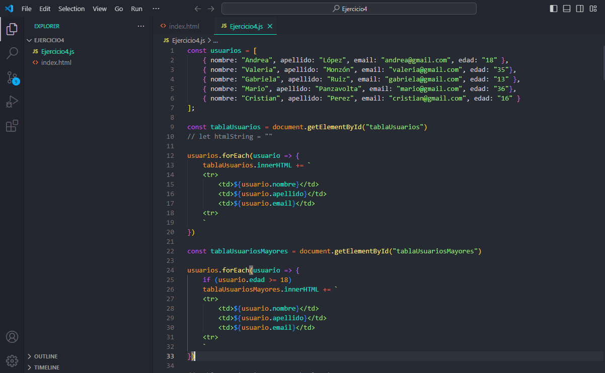

En mi segundo proyecto, me dediqué a aprender y practicar la creación de funciones en JavaScript. Este proyecto se centró en los conceptos básicos del lenguaje, como la definición y ejecución de funciones, el manejo de variables y la implementación de lógica condicional. Aunque no vinculé estas funciones a un sitio web, este ejercicio me permitió comprender cómo JavaScript puede ser utilizado para realizar cálculos, manipular datos y automatizar tareas, sentando una base sólida para futuros proyectos más complejos.
